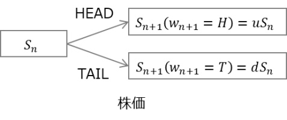
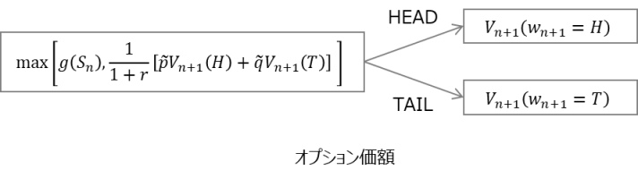

| 記号・用語 | 定義 |
|---|---|
| client | 金融商品の買い手。long positionを持つ |
| agent | 金融商品の売り手。short poisionを持つ |
| $n$ | 時刻。$n\in \{0,\mathbb{N} \}$とし、$n=0$を契約時、$n=N$を満期時と定義する |
| $r$ | money marketにおいて、時刻が$1$進む間のinterest rate。 |
| $S_{n}$ | 時点$n$におけるstock $S$の価額 |
| $X_{n}$ | 時点$n$におけるagentの持つ全資産$X$の価額 |
| $K$ | strike price(行使価格) |
| $V_n$ | 時点$n$における金融商品$V$の価額 |
 
Europianオプションの議論を元にすると、時点$n+1$における支払をヘッジするためにはDelta Hedgingをとる必要がある。Delta Hedgin Positionは次のように記述される。 \begin{eqnarray} \Delta_n(w_1,w_2\cdots w_n) &=& \frac{V_{n+1}^{\textrm{EUR}}(w_1,w_2\cdots w_n,H)-V_{n+1}^{\textrm{EUR}}(w_1,w_2\cdots w_n,T)}{S_{n+1}(w_1,w_2\cdots w_n,H)- S_{n+1}(w_1,w_2\cdots w_n,T)}\\ V_n^{\textrm{EUR}}(w_1,w_2\cdots w_n)&=& \frac{1}{1+r}\left(\tilde{p}V_{n+1}^{\textrm{EUR}}(w_1,w_2\cdots w_n,H) + \tilde{q}V_{n+1}^{\textrm{EUR}}(w_1,w_2\cdots w_n,T) \right)\\ \end{eqnarray} where \begin{eqnarray} \tilde{p}=\frac{1+r-d}{u-d},\quad \tilde{q}=\frac{u-1-r}{u-d} \end{eqnarray} 仮に時点$n$において$g(S_n)>V_n^{\textrm{EUR}}$とする。時点$n$での権利行使に対してはEuropianオプションのDelta Hedge$V_n^{\textrm{EUR}}$ではpay-offに満たず、$g(S_n)$のpositionが必要になる。